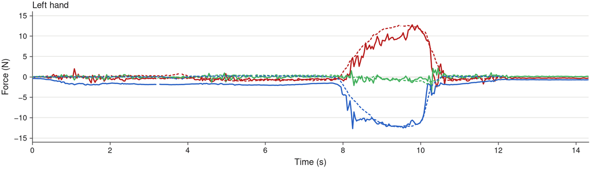
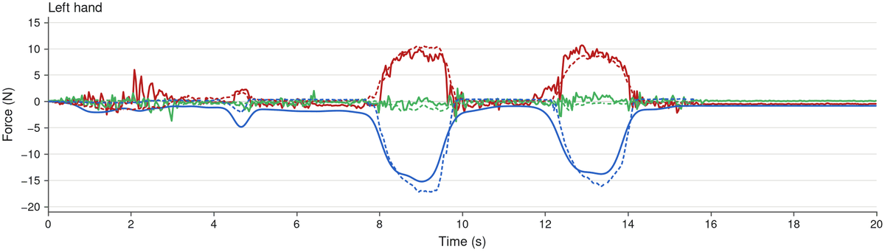
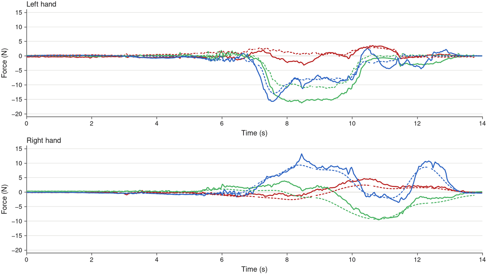
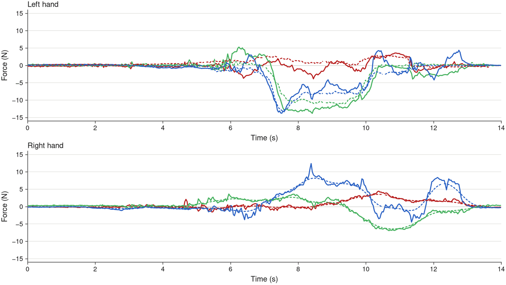
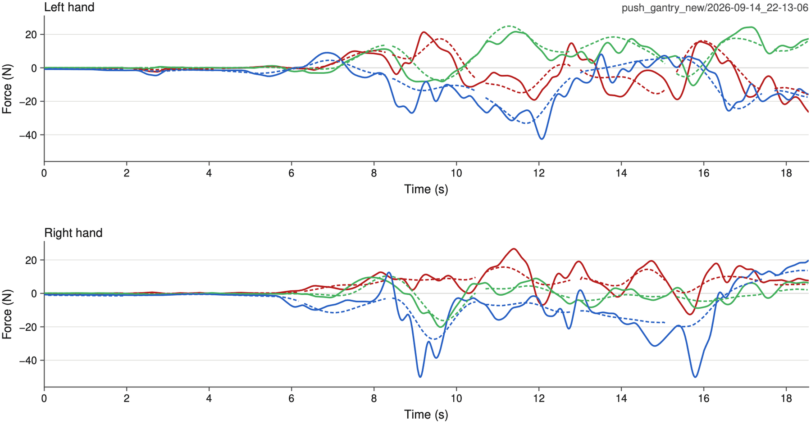

Abstract
Many everyday tasks require controlling contact force as well as motion. On a humanoid, this force must often be coordinated across both hands and the whole body, and cannot be specified by kinematic trajectories alone. Learning such tasks by imitation therefore needs demonstrations that record contact force, and a whole-body controller that can deliver it. We present FLoRe, a framework for learning force-reactive humanoid loco-manipulation. Its robot-free force-annotated data collection system records the contact wrench applied through two UMI-style handheld grippers, together with hand, torso, and foot motion. A force-reactive diffusion policy takes vision, proprioception, and measured wrenches as input, then predicts actions and per-hand force commands. A hybrid compliance whole-body controller with force tracking executes these commands while maintaining balance: an integral of the force error measured by real force/torque (F/T) sensors lets each hand track force accurately along the commanded direction and comply along the others. In simulation, the controller tracks per-hand force commands of varied magnitude and direction, with little loss in whole-body motion accuracy. Across three contact-rich tasks on the robot, the force-reactive policy succeeds in 80% of rollouts, compared with 26.7% for a position-only policy trained on the same demonstrations and executed by the same controller.
Pipeline

Hybrid Compliance Whole-body Controller
with Force Tracking
The control law. Each hand's force command becomes a shift of its position target. Along the task direction , the target and the integral that shifts it are
Unified reference generator. The policy outputs only joint positions, so a force command has to become a position target. The motion's reference brings the hand to the surface, and the force command , the force the hand should exert on it, then moves the target into it by , with a nominal stiffness. The hand cannot follow the target there, so in tracking it the hand presses on the surface; its wrist F/T sensor measures , the force the surface exerts on the hand, and tracking means .
How hard a shift presses depends on the stiffness of the contact, which the robot does not know. So , the integral of the force error with gain , moves the target further in, or back, by , until the measured force balances the command; the contact phase lets it build up only in contact and clears it on release. The policy is trained to reach while it balances.
The chart runs with JavaScript.
Compliant behavior. On the robot the law runs on all three axes of each hand, and a measured force need not lie along the force direction. A push along , say, where nothing is commanded, is measured too: , the external force on the hand. In contact, with , the integral then builds up with the push and moves the target along with it, for as long as the push lasts and as far as its bound allows: the hand gives way instead of resisting it.
So the hand tracks the force along the force direction and complies along the other axes at once, with nothing switching between the two.
Compared with other learned controllers. Learned legged and humanoid controllers treat the force that the world exerts on the hand, the external force , in one of two ways. They reject it as a disturbance and hold the reference (FALCON), or give way to it with a commanded stiffness, which at rest makes the hand a spring (FACET, SoftMimic, CHIP):
A stiff hand holds its reference however hard it is pushed, and a compliant one gives way, but neither can be told how hard to press. Only FLoRe measures the force at each wrist and integrates its error, so that one whole-body policy tracks position in free space and force along the task direction, and complies along the other axes.
Try it below: the controller runs in your browser, with MuJoCo and the policy compiled to WebAssembly as in the code release. The left hand faces a virtual wall along x, with the compliant contact of training, and each arrow carries its value along x, so you can read how closely Fmeas mirrors Fcmd: the same force, pushing back. Of the forces from outside, the simulated F/T sensor reads the wall's alone, as in training, where nothing else touches the hand: the orange Fext is an extra push it does not read, which the policy has to reject.
- Command a force Set Fcmd (purple) with the upper slider, up to 20 N: the hand presses on the wall until Fmeas (blue) reads −Fcmd, the same force pushing back.
- Push the hand Push or pull it with Fext (orange), the lower slider: Fmeas returns to −Fcmd. Or drag the robot with the mouse.
- Look around Drag to orbit and scroll to zoom; R resets. A panel folds away when you click its title.
Try the full demo in a new tab!
Here Fcmd = −10 N along x, and the gauge reads the same force as the wrist's F/T sensor, Fmeas. When the external force grows or shrinks, the reading strays from 10 N, and the controller gradually brings it back.
Real-world Experiments
Three contact-rich tasks on a Unitree G1. Across them, the force-reactive policy succeeds in 80% of rollouts, against 26.7% for a position-only policy trained on the same demonstrations and executed by the same controller.
Wipe Board
The robot presses an eraser against a whiteboard and wipes a marked strip. Success depends on the normal force, which the images do not show.


FxFyFz Solid: measured forceDashed: predicted force
Baseline failure
Without a force command, the position-only baseline brings the eraser to the board but does not press it on: the eraser hovers over the mark and leaves it.
Rotate Box
The robot pinches the rim of a crate with both hands, rotates it by about 50°, drags it about 0.5 m across the table and releases it. The hands share an internal force: if one leads the other, the crate tips.


FxFyFz Solid: measured forceDashed: predicted force
Baseline failure
Without a force command, the position-only baseline puts both hands on the rim but does not squeeze it, and the heavy crate does not turn.
Push Gantry
The robot places both hands on a heavy wheeled frame and walks it forward. The legs and torso produce the push while the arms keep both hands on the frame: too little force does not move it, too much makes the hands slip or the robot lose balance.

FxFyFz Solid: measured forceDashed: predicted force
Baseline failure
Without a force command, the position-only baseline reaches the demonstrated pose, but the frame does not move and the policy has no way to push harder; in the end the robot loses its balance.
Robot-free Force-annotated Data Collection System

A Rotate Box demonstration: the two grippers pinch the crate’s rim, turn it and drag it across the table.